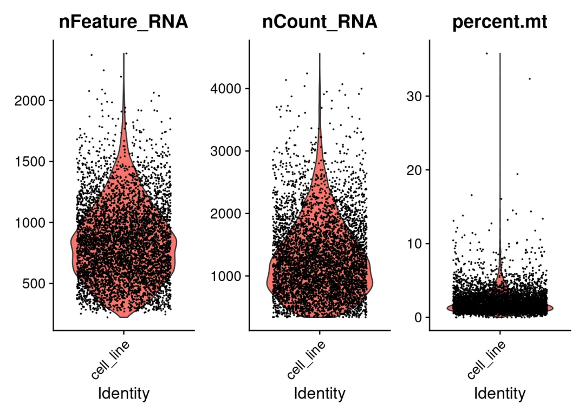
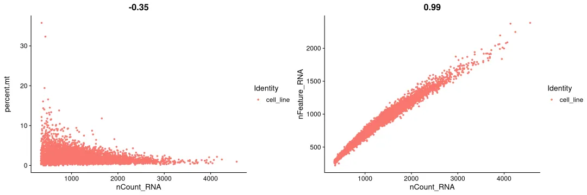
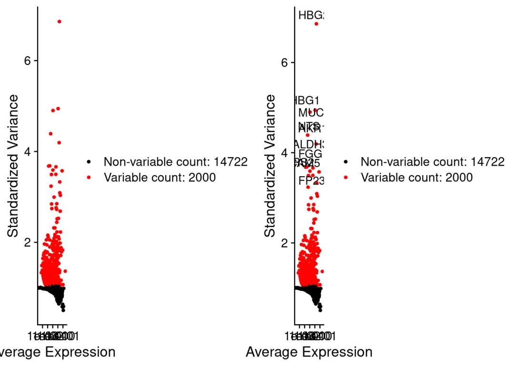
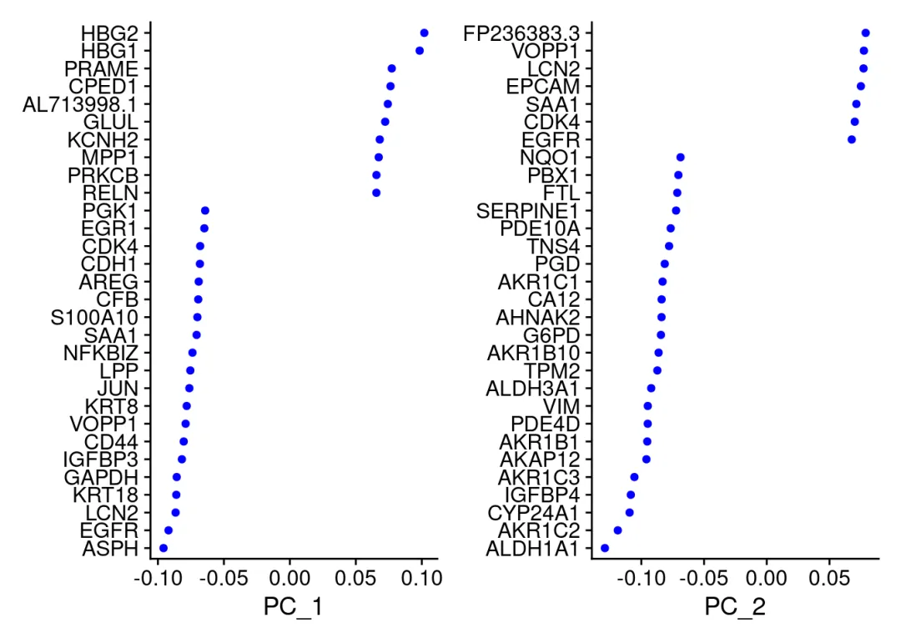
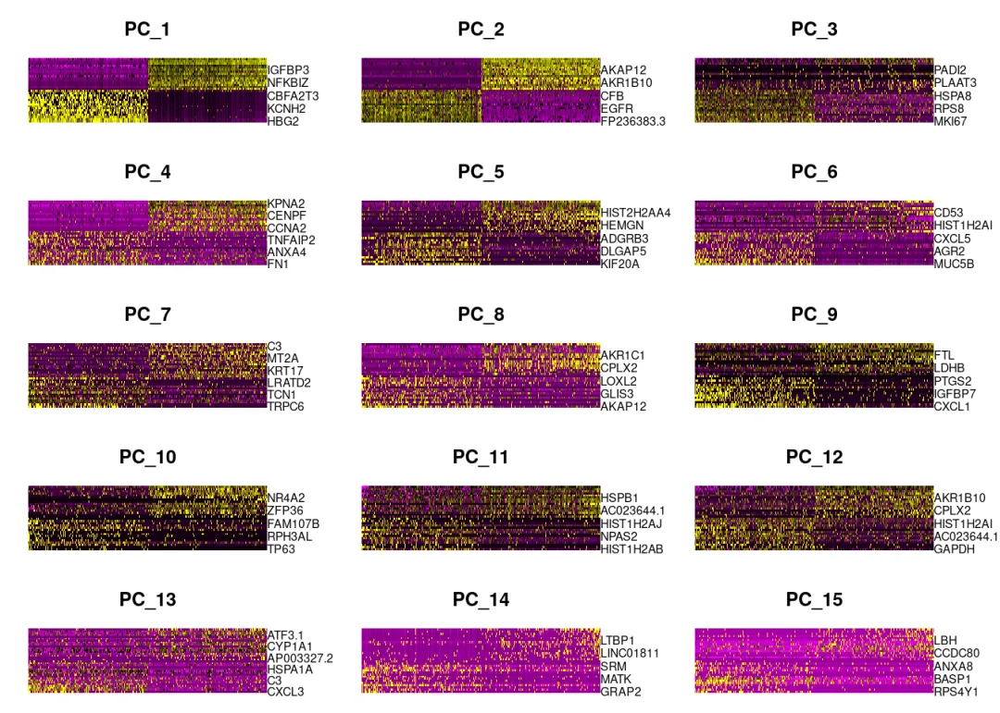
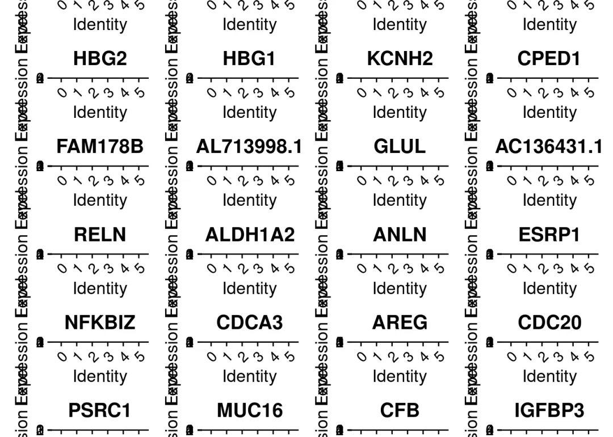
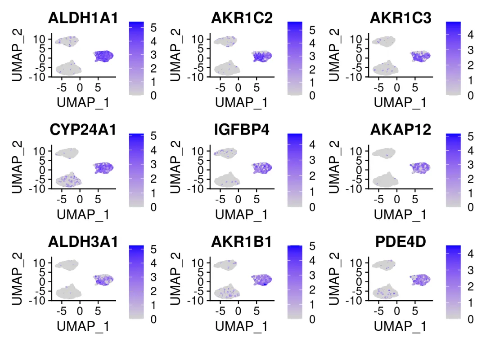
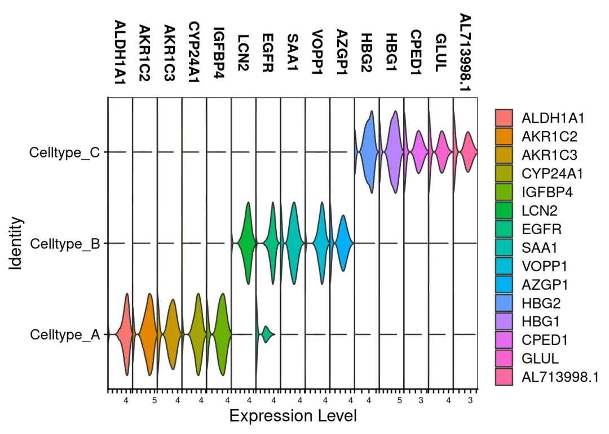

scFAST分析| 04.Seurat分析及可视化
原文：https://mp.weixin.qq.com/s?__biz=MzAwMzIzOTk5OQ==&mid=2247504435&idx=1&sn=c6a6f7ca00684601f3cda49e53be5339&chksm=9b3cab63ac4b2275d993bbaa64c71652685065fa377be57319fc6a5c47eb958b3644c7459cd5#rd 合集：单细胞教程全收录
Seurat分析及可视化


与以往的教程一样，我们给大家准备了数据分析的学习手册，目前分为scFAST绪论、准备工作、fast模块、Seurat分析与可视化、mut模块等五节内容(更多章节持续创作中)及对应测试文件，大家可以添加企业微信回复关键字"scFAST学习手册 "即领:
Seurat可谓是单细胞数据分析及可视化的神包，利用R语言分析单细胞不可不学的利器。这部分内容阅读有障碍的同学可以查看以下我们以往的教程：
单细胞测序基础数据分析保姆级教程 ，代码部分整理在往期推送之中：
手把手教你做单细胞测序数据分析（一）——绪论 手把手教你做单细胞测序数据分析（二）——各类数据结构与读取方法 手把手教你做单细胞测序数据分析（三）——单样本分析 手把手教你做单细胞测序数据分析（四）——多样本整合 手把手教你做单细胞测序数据分析（五）——细胞类型注释 手把手教你做单细胞测序数据分析（六）——组间差异分析及可视化 手把手教你做单细胞测序数据分析（七）——基因集富集分析
4.1 数据读取
# 设置工作目录
setwd('~/analysis/xunyin/')
# 加载R包
if (!require("Seurat", quietly = TRUE))install.packages("Seurat")
## Attaching SeuratObject
if (!require("BiocManager", quietly = TRUE))install.packages("BiocManager")
## Bioconductor version '3.15' is out-of-date; the current release version '3.17'
## is available with R version '4.3'; see https://bioconductor.org/install
if (!require("multtest", quietly = TRUE))install.packages("multtest")
##
## Attaching package: 'BiocGenerics'
## The following objects are masked from 'package:stats':
##
## IQR, mad, sd, var, xtabs
## The following objects are masked from 'package:base':
##
## anyDuplicated, append, as.data.frame, basename, cbind, colnames,
## dirname, do.call, duplicated, eval, evalq, Filter, Find, get, grep,
## grepl, intersect, is.unsorted, lapply, Map, mapply, match, mget,
## order, paste, pmax, pmax.int, pmin, pmin.int, Position, rank,
## rbind, Reduce, rownames, sapply, setdiff, sort, table, tapply,
## union, unique, unsplit, which.max, which.min
## Welcome to Bioconductor
##
## Vignettes contain introductory material; view with
## 'browseVignettes()'. To cite Bioconductor, see
## 'citation("Biobase")', and for packages 'citation("pkgname")'.
if (!require("dplyr", quietly = TRUE))install.packages("dplyr")
##
## Attaching package: 'dplyr'
## The following object is masked from 'package:Biobase':
##
## combine
## The following objects are masked from 'package:BiocGenerics':
##
## combine, intersect, setdiff, union
## The following objects are masked from 'package:stats':
##
## filter, lag
## The following objects are masked from 'package:base':
##
## intersect, setdiff, setequal, union
# 指定数据路径
data_dir <- "cellline_out/step3/filtered_feature_bc_matrix/"
list.files(data_dir)
## [1] "barcodes.tsv.gz" "features.tsv.gz" "matrix.mtx.gz"
#自动读取定量数据，格式为三个tsv或mtx文件
scFAST.data <- Read10X(data.dir = data_dir)
# 创建Seurat对象并初步过滤
# min.cells表示基因至少在几个细胞中表达，min.genes代表每个细胞中至少表达多少基因，细胞的平均reads数量> 5万一般比较好，否则需要补测：
scFAST <- CreateSeuratObject(counts = scFAST.data,
project = "cell_line", min.cells = 3,
min.features = 200)
4.2 数据预处理
# 通过线粒体的序列数来对数据进行计算线粒体mRNA百分比：
scFAST[["percent.mt"]] <- PercentageFeatureSet(scFAST,
pattern = "^MT-") # 小鼠数据需要换为mt
# QC的数据存在meta.data里，可以用这个来查看前5行
head(scFAST@meta.data, 5)
## orig.ident nCount_RNA nFeature_RNA percent.mt
## CAGGCCAGCTCACAGCC cell_line 341 281 0.5865103
## CCGGGTATACGAAGTCC cell_line 341 285 2.9325513
## GTGTGGCGCTGTACTAC cell_line 338 258 3.8461538
## TCAGCAACGATCCGCGA cell_line 341 275 1.1730205
## TCCCATGTACTAGTCCT cell_line 340 273 2.3529412
# 用小提琴图来展示QC的结果，展示了每个barcode中基因的数目、UMI数目以及线粒体基因含量的分布情况：
#pdf(file = 'Feature.Count.percent.mt.pdf',height = 6,width = 18)
VlnPlot(scFAST,
features = c("nFeature_RNA", "nCount_RNA", "percent.mt"),
ncol = 3)

#dev.off()
# 可视化：
plot1 <- FeatureScatter(scFAST, feature1 = "nCount_RNA", feature2 = "percent.mt")
plot2 <- FeatureScatter(scFAST, feature1 = "nCount_RNA", feature2 = "nFeature_RNA")
#pdf(file = '判断基因表达趋势.pdf',width = 12,height = 6)
CombinePlots(plots = list(plot1, plot2)) #高变基因，判断趋势及占比
## Warning: CombinePlots is being deprecated. Plots should now be combined using
## the patchwork system.

#dev.off()
# 质控，选子集，RNA数量在200与2500之间的，多的可能是低质量细胞或空drouplets，gene count多的可能是doublets or multiplets:
scFAST <- subset(scFAST, subset = nFeature_RNA > 200 &
nFeature_RNA < 2500 & percent.mt < 5)
# 用LogNormalize法对数据进行标准化（乘10000再取对数）数据存在scFAST[["RNA"]]@data.里
# 默认的方法也完成了log1p的操作，得到的结果就类似于TPM的对数:
scFAST <- NormalizeData(scFAST, normalization.method = "LogNormalize",
scale.factor = 10000)
# 筛选高变基因（输出2000个），用于下游的PCA及分群:
scFAST <- FindVariableFeatures(scFAST, selection.method = "vst",
nfeatures = 2000)
# 输出差异最大的十个基因:
top10 <- head(VariableFeatures(scFAST), 10)
plot1 <- VariableFeaturePlot(scFAST)
plot2 <- LabelPoints(plot = plot1, points = top10, repel = TRUE)
## When using repel, set xnudge and ynudge to 0 for optimal results
#输出差异基因散点图（有无标签）:
CombinePlots(plots = list(plot1, plot2))
## Warning: CombinePlots is being deprecated. Plots should now be combined using
## the patchwork system.

# 将数据进行归一化，为后续的PCA分析做准备，数据存在scFAST[["RNA"]]@scale.data
scFAST <- ScaleData(scFAST, features = rownames(scFAST))
## Centering and scaling data matrix
#scFAST <- ScaleData(scFAST)#only4VariableFeatures
# 回归计算消除无关的变量（如线粒体的比例）：
scFAST <- ScaleData(scFAST, vars.to.regress = "percent.mt")
## Regressing out percent.mt
## Centering and scaling data matrix
#scFAST[["RNA"]]@scale.data
# PCA降维分析：
scFAST <- RunPCA(scFAST,
features = VariableFeatures(object = scFAST))
## PC_ 1
## Positive: HBG2, HBG1, PRAME, CPED1, AL713998.1, GLUL, KCNH2, MPP1, PRKCB, RELN
## AC136431.1, LINC01287, CBFA2T3, FAM178B, NUP214, AC004949.1, AP000547.3, ANK1, AC097528.1, RHAG
## LYL1, LINC02476, ALDH1A2, CTCFL, SEPTIN5, GYPC, EPB41, AP001531.1, ZEB2, GATA1
## Negative: ASPH, EGFR, LCN2, KRT18, GAPDH, IGFBP3, CD44, VOPP1, KRT8, JUN
## LPP, NFKBIZ, SAA1, S100A10, CFB, AREG, CDH1, CDK4, EGR1, PGK1
## PIP4K2C, CCN1, MUC16, SOD2, KRT19, KRT7, AZGP1, UBC, PGM1, TGFBI
## PC_ 2
## Positive: FP236383.3, VOPP1, LCN2, EPCAM, SAA1, CDK4, EGFR, AZGP1, RPL7, PIP4K2C
## KRT19, HIST1H1B, CFB, CDH1, RNASET2, NFKBIZ, LAD1, SERPINB4, CCT6A, MUC16
## F3, LANCL2, ESRP1, ICAM1, SLC43A3, PDZK1IP1, CHCHD2, CLDN4, CDH3, GNS
## Negative: ALDH1A1, AKR1C2, CYP24A1, IGFBP4, AKR1C3, AKAP12, AKR1B1, PDE4D, VIM, ALDH3A1
## TPM2, AKR1B10, G6PD, AHNAK2, CA12, AKR1C1, PGD, TNS4, PDE10A, SERPINE1
## FTL, PBX1, NQO1, MYO1E, ANXA2, UGDH, CPLX2, THSD4, MAP1B, IGFBP7
## PC_ 3
## Positive: MKI67, HIST1H1C, RPS6, STMN1, RPL29, HSP90AA1, RPS8, MYH9, HMGB2, FLNA
## FTL, HIST1H1E, HSPA8, HIST1H2AI, PRRC2A, TUBB4B, RANBP1, SERBP1, INCENP, RPL24
## LDHB, PLEC, TOP2A, TPX2, CENPF, MRPL16, HSPD1, PPP1R15A, PRAME, ACTN4
## Negative: GAPDH, PTMA, IGFBP3, TRPC6, AC007325.2, PADI2, FGG, VOPP1, PLAAT4, NTS
## FGB, PLAAT3, SERPINB4, AZGP1, MUC4, FGA, LCN2, KRT18, SAA4, TCN1
## SUSD2, PEG10, HMOX1, LIPG, AC093817.2, SEMA3A, NUPR1, SLC16A5, TRIM31, C4orf19
## PC_ 4
## Positive: FN1, NEAT1, C3, CXCL8, ANXA4, IGFBP3, RCSD1, CD24, INSIG1, PHLDB2
## TNFAIP2, CFH, PNRC1, NDRG1, CXCL5, ARL15, DLK1, FNDC3B, STXBP5, CD53
## MAP1A, EPB41, LRMDA, IFNGR1, C1R, ADGRB3, RHAG, RND1, CFB, SOX6
## Negative: MKI67, KPNA2, TUBB4B, TPX2, TOP2A, CDCA3, ANLN, CENPF, NUSAP1, HIST1H1B
## AURKA, INCENP, HMGB2, CCNA2, KNSTRN, HIST1H1E, HIST1H2AB, ECT2, HIST1H2AI, RRM2
## PTMA, CDC20, CDCA8, H2AFX, KIF20A, PSRC1, FAM83D, CCNB1, PLK1, KIF2C
## PC_ 5
## Positive: KIF20A, RCSD1, CDC20, DLK1, CCNB1, CENPF, DLGAP5, ANXA1, KPNA2, AURKA
## PSRC1, CCNB2, ADGRB3, TOP2A, TPX2, CDCA3, CD53, ARL6IP1, ANTXR2, STXBP5
## NUSAP1, SOSTDC1, CALB1, SLAMF6, BUB1, CFH, SOX6, CD24, LYZ, MUC4
## Negative: HIST1H2AI, HIST1H1E, HIST1H1B, HIST1H2AB, HIST1H1C, HIST2H2AA4, HBG2, HIST2H2AC, HBG1, HIST1H2AJ
## HIST1H1D, HEMGN, SLC43A3, FAM178B, CA1, RRM2, PKLR, HIST2H2BF, FOSL1, CCN1
## ATF3, HIST1H2BK, MCM2, CCDC26, ATAD3B, SLC38A5, CDC45, KCNH2, RANBP1, SRM
# 打印PCA部分结果：
print(scFAST[["pca"]], dims = 1:5, nfeatures = 5)
## PC_ 1
## Positive: HBG2, HBG1, PRAME, CPED1, AL713998.1
## Negative: ASPH, EGFR, LCN2, KRT18, GAPDH
## PC_ 2
## Positive: FP236383.3, VOPP1, LCN2, EPCAM, SAA1
## Negative: ALDH1A1, AKR1C2, CYP24A1, IGFBP4, AKR1C3
## PC_ 3
## Positive: MKI67, HIST1H1C, RPS6, STMN1, RPL29
## Negative: GAPDH, PTMA, IGFBP3, TRPC6, AC007325.2
## PC_ 4
## Positive: FN1, NEAT1, C3, CXCL8, ANXA4
## Negative: MKI67, KPNA2, TUBB4B, TPX2, TOP2A
## PC_ 5
## Positive: KIF20A, RCSD1, CDC20, DLK1, CCNB1
## Negative: HIST1H2AI, HIST1H1E, HIST1H1B, HIST1H2AB, HIST1H1C
#pdf(file = 'PCA_点图.pdf',width = 10,height = 6)
VizDimLoadings(scFAST, dims = 1:2, reduction = "pca")

#dev.off()
# 三种PCA展示方式：
DimHeatmap(scFAST, dims = 1,
cells = 500, balanced = TRUE)

#pdf(file = 'PCA.heatmap.pdf',width = 15,height = 12)
# 展示15种PCA：
DimHeatmap(scFAST, dims = 1:15,
cells = 500, balanced = TRUE)

#dev.off()
# 筛选合适的维度：
# 重复计算次数：
scFAST <- JackStraw(scFAST, num.replicate = 100)
# 计算维度这一步花的时间比较久：
scFAST <- ScoreJackStraw(scFAST, dims = 1:20)
#pdf(file = 'jackstrawplot.pdf',width = 6,height = 6)
# JackStrawPlot相当于高级PCA，为挑选合适维度进行下游可视化提供依据：
# 画出1到15个维度：
JackStrawPlot(scFAST, dims = 1:15)
## Warning: Removed 21504 rows containing missing values (geom_point).

#dev.off()
# 利用ElbowPlot来评价PC，不可为了结果好看而降低PC数
#pdf(file = 'elbow.pdf',width = 6,height = 5)
ElbowPlot(scFAST)

#dev.off()
4.3 降维、分群、注释
scFAST <- FindNeighbors(scFAST, dims = 1:11)
## Computing nearest neighbor graph
## Computing SNN
# 细胞分群，resolution分辨率在细胞数在3000附近时一般设为0.4-1.2，resolution越大得到的类群越多:
scFAST <- FindClusters(scFAST, resolution = 0.5)
## Modularity Optimizer version 1.3.0 by Ludo Waltman and Nees Jan van Eck
##
## Number of nodes: 4986
## Number of edges: 165138
##
## Running Louvain algorithm...
## Maximum modularity in 10 random starts: 0.8383
## Number of communities: 6
## Elapsed time: 0 seconds
# 看前五个分类群ID:
head(Idents(scFAST), 5)
## CAGGCCAGCTCACAGCC CCGGGTATACGAAGTCC GTGTGGCGCTGTACTAC TCAGCAACGATCCGCGA
## 2 2 0 1
## TCCCATGTACTAGTCCT
## 2
## Levels: 0 1 2 3 4 5
#非线性降维方法：UMAP、tSNE
# 运行UMAP算法:
scFAST <- RunUMAP(scFAST, dims = 1:11)
## Warning: The default method for RunUMAP has changed from calling Python UMAP via reticulate to the R-native UWOT using the cosine metric
## To use Python UMAP via reticulate, set umap.method to 'umap-learn' and metric to 'correlation'
## This message will be shown once per session
## 11:09:52 UMAP embedding parameters a = 0.9922 b = 1.112
## 11:09:52 Read 4986 rows and found 11 numeric columns
## 11:09:52 Using Annoy for neighbor search, n_neighbors = 30
## 11:09:52 Building Annoy index with metric = cosine, n_trees = 50
## 0% 10 20 30 40 50 60 70 80 90 100%
## [----|----|----|----|----|----|----|----|----|----|
## **************************************************|
## 11:09:53 Writing NN index file to temp file /tmp/RtmpBqtxhu/file8bf4d523b90af
## 11:09:53 Searching Annoy index using 1 thread, search_k = 3000
## 11:09:55 Annoy recall = 100%
## 11:09:56 Commencing smooth kNN distance calibration using 1 thread with target n_neighbors = 30
## 11:09:57 Initializing from normalized Laplacian + noise (using irlba)
## 11:09:57 Commencing optimization for 500 epochs, with 199020 positive edges
## 11:10:04 Optimization finished
# 运行TSNE算法，TSNE算法运行时间较UMAP更久:
scFAST <- RunTSNE(scFAST, dims = 1:11)
DimPlot(scFAST, reduction = "umap", label = TRUE)

# 计算cluster1相较于其它cluster的marker：
cluster1.markers <- FindMarkers(scFAST, ident.1 = 1,
min.pct = 0.25)
# roc算法计算cluster1的marker
cluster1.markers <- FindMarkers(scFAST, ident.1 = 0,
logfc.threshold = 0.25,
test.use = "roc",
only.pos = TRUE)
# 查看前五个标记基因：
head(cluster1.markers, n = 5)
## myAUC avg_diff power avg_log2FC pct.1 pct.2
## ALDH1A1 0.973 3.584375 0.946 5.171160 0.953 0.052
## CYP24A1 0.924 2.547823 0.848 3.675732 0.890 0.151
## AKR1C2 0.910 3.383152 0.820 4.880857 0.836 0.042
## PKM 0.879 0.872585 0.758 1.258874 0.993 0.881
## IGFBP4 0.863 2.537671 0.726 3.661086 0.747 0.043
# 寻找每一个分类群与其他所有细胞之间的标记基因，并只显示positive结果
scFAST.markers <- FindAllMarkers(scFAST, only.pos = TRUE,
min.pct = 0.25,
logfc.threshold = 0.25)
## Calculating cluster 0
## Calculating cluster 1
## Calculating cluster 2
## Calculating cluster 3
## Calculating cluster 4
## Calculating cluster 5
library(dplyr)
# 筛选出top10：
top10gene <- scFAST.markers %>% group_by(cluster) %>%
top_n(n = 10, wt = avg_log2FC)
# pdf(file = 'top10marker.pdf',width = 20,height = 100)
VlnPlot(scFAST, features = unique(top10gene$gene),
pt.size = 0,ncol = 4)

# dev.off()
VlnPlot(scFAST, features = unique(top10gene$gene),
pt.size = 0,stack = T)

DimPlot(scFAST)

# 查看部分marker基因在FeaturePlot(以UMAP作为底图)中的表达情况：
FeaturePlot(scFAST,
features = unique(top10gene$gene)[1:9])

# 展示cluster标签
FeaturePlot(scFAST,
features = unique(top10gene$gene)[1:9],
label = T)

FeaturePlot(scFAST,
features = c("ALDH1A1","AKR1C2","AKR1C3","CYP24A1"))

# 展示前10个标记基因的热图
top10 <- scFAST.markers %>% group_by(cluster) %>% top_n(n = 10, wt = avg_log2FC)
DoHeatmap(scFAST, features = top10$gene) + NoLegend()

#通过标记基因及文献，可以人工确定各分类群的细胞类型，则可以如下手动添加细胞群名称：
# 重命名方法1：
new.cluster.ids <- c("Celltype_A", "Celltype_B","Celltype_C",
"Celltype_B","Celltype_B","Celltype_C")
names(new.cluster.ids) <- levels(scFAST)
scFAST <- RenameIdents(scFAST, new.cluster.ids)
scFAST$celltype <- Idents(scFAST)
# 重命名方法2
scFAST$celltype <- scFAST$RNA_snn_res.0.5
scFAST$celltype <- recode(scFAST$celltype,
'0'="Celltype_A",
'1'="Celltype_B",
'2'="Celltype_C",
'3'="Celltype_B",
'4'="Celltype_B",
'5'="Celltype_C")
Idents(scFAST) <- 'celltype'
# 计算重命名后的细胞类型marker
scFAST_rename_markers <- FindAllMarkers(scFAST, only.pos = TRUE,
min.pct = 0.25,
logfc.threshold = 0.25)
## Calculating cluster Celltype_A
## Calculating cluster Celltype_B
## Calculating cluster Celltype_C
# 筛选top5 maker
top5_rename <- scFAST_rename_markers %>% group_by(cluster) %>%
top_n(n = 5, wt = avg_log2FC)
# 利用堆积小提琴图查看表达情况：
VlnPlot(scFAST,
features = unique(top5_rename$gene),
stack = T)

# 求各个细胞类型基因的平均表达量：
cell.expr <-
log1p(AverageExpression(scFAST, verbose = FALSE)$RNA)
head(cell.expr)
## Celltype_A Celltype_B Celltype_C
## AL627309.1 0.00000000 0.000000000 0.28221346
## AL627309.2 0.00000000 0.006774702 0.01673949
## AL627309.5 0.04375944 0.116682264 0.20596967
## AP006222.2 0.01291225 0.013775439 0.56941424
## AL732372.1 0.00000000 0.009998963 0.01746337
## AC114498.1 0.00000000 0.010397461 0.03523540
DimPlot(scFAST, reduction = "umap",
label = TRUE, pt.size = 0.5) + NoLegend()

Idents(scFAST) <- 'celltype'
DimPlot(scFAST, reduction = "umap",
label = TRUE, pt.size = 0.5) + NoLegend()
可以如是完成数据的保存与再次读取：
# 创建目录：
dir.create('scFAST_out')
# 将Seurat对象保存为rds文件输出：
saveRDS(scFAST, file = "./scFAST_out/scFAST_fast.rds")
# 读取rds文件：
scFAST <- readRDS('./scFAST_out/scFAST_fast.rds')
学习手册
与以往的教程一样，我们给大家准备了数据分析的学习手册，目前分为scFAST绪论、准备工作、fast模块、Seurat分析与可视化、mut模块等五节内容(更多章节持续创作中)及对应测试文件，大家可以添加企业微信回复关键字"scFAST学习手册 "即领:
往期回顾